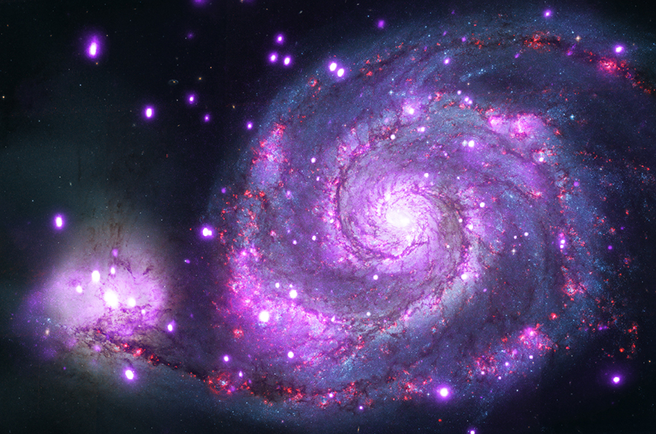

Explore the wonders of our universe with this interactive book. Each page reveals fascinating facts about different galaxies, complete with animations and transitions to bring the content to life.
"Among the stars so bright, in the dark of night, the galaxy's light is a wondrous sight."
Andromeda also known as Messier 31, is a spiral galaxy located about 2.5 million light years away. It is thought that the Milky Way and Andromeda will collide several billion years merging to potentially form a giant elliptical galaxy or a large lenticular galaxy.
The Andromeda Galaxy is the nearest major galaxy to our own. We do have closer neighbor galaxies, but they are much smaller. Two of them, the Magellanic Clouds, can be seen with the naked eye from Earth's southern hemisphere. They look like detached scraps of the Milky Way.
Star charts of that period labeled it as the Little Cloud. In 1612, the German astronomer Simon Marius gave an early description of the Andromeda Galaxy based on telescopic observations.
Cigar Galaxy shines brightly at infrared wavelengths and is remarkable for its star formation activity. The Cigar Galaxy experiences gravitational interactions with its galactic neighbor, M81, causing it to have an extraordinarily high rate of star formation — a starburst.
In November 2023, a gamma-ray burst was observed in M82, which was determined to have come from a magnetar, the first such event detected outside the Milky Way (and only the fourth such event ever detected).
It is also called the 'Cigar Galaxy' because of the elongated elliptical shape produced by the tilt of its starry disk relative to our line of sight. Throughout the galaxy's center, young stars are being born 10 times faster than they are inside the entire Milky Way Galaxy.
Pinwheel Galaxy also known as M101, is a spiral galaxy that measures 170,000 lightyears across and is located 25 million lightyears away from Earth in the Ursa Major constellation.
The galaxy is about twice the diameter of our own galaxy, the Milky Way, and is thought to contain about 1 trillion stars. The discoverer of the galaxy described it as a "nebula without stars".
Spiral galaxies have multiple arms that extend from the central bulge and appear as spirals because of their rotation. It has a disk mass on the order of 100 billion solar masses, along with a small central bulge of about 3 billion solar masses.
Whirlpool Galaxy these arms serve an important purpose: they are star-formation factories, compressing hydrogen gas and creating clusters of new stars.
The graceful, winding arms of the majestic spiral galaxy M51 appear like a grand spiral staircase sweeping through space.
The whirlpool, like many other galaxies, has a supermassive black hole at its heart, surrounded by rings of dust. The core of the galaxy is quite active — making the Whirlpool what astronomers call a “Seyfert galaxy”.
Discover More About Galaxies
Andromeda Galaxy - Our nearest spiral galaxy neighbor.
Cigar Galaxy - Known for its high rate of star formation.

Pinwheel Galaxy - A massive spiral galaxy.

Whirlpool Galaxy - Famous for its striking spiral arms.